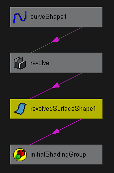

- 场景层次(Scene Hierarchy)
-
场景层次是父节点下子节点的分组。详细信息请参见场景层次。
- 输入和输出连接/输入连接/输出连接(Input and Output Connections/Input Connections/Output Connections)
-
显示选定节点的“输入和输出连接”(Input and Output connections)。“输入”(Input)连接是向选定节点提供输入的一个节点。“输出”(Output)连接是从选定节点接收输出的一个节点。
若要查看大多数对象的连接，必须选择对象的形状节点，而不是变换节点。
显示节点的输出连接时，可以看到互相输出的节点链，以及到达最终接收节点的所有方法。
示例 1
通过旋转 NURBS 曲线可创建酒杯曲面。选择旋转曲面的形状节点并选择“图表 > 输入和输出连接”(Graph > Input and Output Connections)时，将显示以下依存关系图：
注：该图表将垂直显示。默认情况下，依存关系图将水平显示。
节点之间的连接线显示了连接方向。连接线源自输出数据的节点，且该线指向接收数据作为输入的节点。
示例图表显示，曲线为旋转操作节点提供输入。旋转操作将生成旋转形状 - 酒杯。旋转形状连接到 initialShadingGroup，其中设置了 Maya 中创建的所有几何形状的默认颜色。
如果将鼠标指针移至连接线上，将显示工具提示，并识别输出节点名称、提供输出的属性、输入节点的名称以及将接收输入的属性。在许多情况下，必须熟悉 Maya 的内部操作细节才能了解白框中看到的节点和属性名称。
注： 依存关系图和场景层次将已设置动画的节点显示为斜框。如果使用表达式设置节点的动画，则会显示常规的矩形框而不是斜框。所有其他动画技术均显示斜框。示例 2
设置 NURBS 球体（名为 Ball）的 translateX 属性的关键帧。如果选择球的变换节点并显示所有输入和输出连接，则会显示该图表：
该斜框指示已为 Ball 的变换节点设置动画。该图表不会指示控制属性的动画技术的类型。
- 连接线颜色
-
连接线是彩色编码的，以指示连接节点的属性的类型。在本例中，属性类型有单值、二元值、三元值、数据和数组。
请参见下表中的说明。
默认颜色 属性类型 示例属性 蓝色 单值 transform.translateX、makeNurbsSphere.radius 青色 二元值 file.repeatUV、cameraShape.cameraAperature 绿色 三元值 transform.translate、lambert.color 洋红色 数据 nurbsSurface.create、makeNurbsSphere.outputSurface 红色 数组 particleShape.position、particleShape.velocity
可以在“颜色”(Colors)窗口（颜色设置）中更改这些默认颜色。
- 排布(Layout)
-
将层次排列还原到原始“输入和输出连接”(Input and Output Connections)布局。
- 重建(Rebuild)
-
在场景层次或依存关系图不自动更新时对其进行更新。例如，如果将对象添加到场景后，场景层次中不显示该对象，则需重建图表以使场景层次了解该对象的状态。
- 增加/减少深度遍历(Increase/Decrease Depth Traversal)
-
可以限制在“Hypergraph”的连接模式中制图的节点数。默认情况下，深度遍历无限制（设置为 -1）。
使用“Hypergraph > 图表 > 增加深度遍历”(Hypergraph > Graph > Increase Depth Traversal)和“Hypergraph > 图表 > 减少深度遍历”(Hypergraph > Graph > Decrease Depth Traversal)可增加或减少深度遍历。也可以使用箭头或在“Hypergraph”菜单栏的数值字段中输入一个整数来更改深度遍历值。单击“无限制”(Unlimited)按钮或将数字设置为 -1 可移除深度遍历限制。
 注： 使用 MEL 命令“Hypergraph”-lgt/limitGraphTraversal 可仅限制连接模式中的节点数。标志采用单个整数值。
注： 使用 MEL 命令“Hypergraph”-lgt/limitGraphTraversal 可仅限制连接模式中的节点数。标志采用单个整数值。hyperGraph -e -lgt 0 [HyperGraphControlName];
该操作会将指定“Hypergraph”的遍历限制设置为 0。
将默认值设置为 -1（无深度限制）。